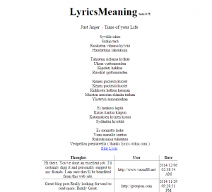
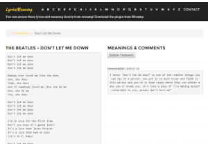

I recently saw that my old Lyrics & Meaning website (lyricsmeaning.za.net) was attacked with lots of spam bots, and the lyrics were not updating properly etc, so I decided its time to revamp! Yes, it looks much much better:
 
{kind=link}
{kind=link}
For the Front-End, I used:
Angular.JS

I chose Angular because I have never created a single page application before, and it should allow me to port to a hybrid mobile app easily when the time comes. **Ok I know Angular 2 is coming out soon, but at the time I started the revamp there was only version 1. The design uses Bootstrap, and uses basic REST calls to update the data via:
ASP.NET Web API 2
{kind=link}
Not much to talk about here, its a normal REST service, which connects to a SQL Database, using Entity Framework (5), coded in C#. This REST service should allow other application to get lyrics from the database etc. I tried to remove some of the spam with server code as well.
{kind=link}
{kind=link}
An ofcource, the lyricsmeaning app is still viewable in Winamp. For information on how to install, go to https://lyricsmeaning.za.net